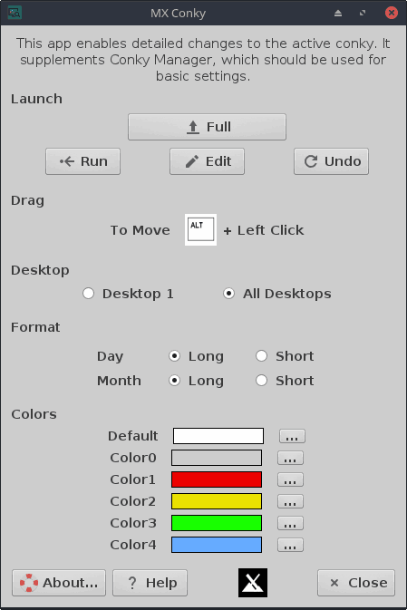
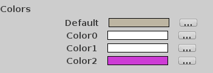
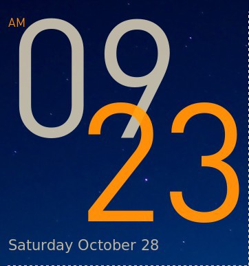

HELP: MX Conky
Background
MX Conky is a tool whose goal is to render the use and customization of conky scripts available to a wider and non-technical audience. It consists of a gui program and an associated data file of conkies (legacy versions) that have been tested and edited for use in MX Linux. The default conkies can be viewed in the Conky Images gallery.
Conky is an extremely versatile system monitoring utility that can display on your desktop a wide variety of information. Many creative conky scripts exist that have expanded its original scope to include music, email, weather, updates, etc. Its range has been further extended with the use of Lua, a lightweight and powerful programming language.
Many users find conkies difficult to customize. They come from many different sources, they follow no consistent configuration layout (in legacy format), many of them no longer work for one reason or another, and the text itself is difficult to understand. The situation was made much easier by Conky Manager (see below). MX Conky was created in an effort to supplement Conky Manager and provide an easy starting point for users lacking prior experience.
Installation
MX Conky and its data pack are installed by default from MX-17 onward; users on earlier versions of MX Linux can install it from the repos. Its installation brings Conky Manager along as a dependency.
Use
NB: do not follow traditional directions about putting conkies in your /home folder (as ~/.conkyrc) and enabling conky to autostart. MX Conky is designed to be used in conjunction with Conky Manager, which is a much better method to deal with them.
Step 1
Conky Manager should be used to set a whole group of configurations.
- Change the basic location (top right, bottom left, etc.)
- Change the transparency setting
- Browse through the available conkies while seeing thumbnails of them
- Select autostart (runs a Conky Manager script)
- Test new conkies (downloaded from the web, for example)
- Etc.
See HELP — Conky Manager for more.
Step 2
NB: changes are instantly recorded in the script. At the end of the session, you will be given the opportunity to save the original that you started with and, if you say yes, a file will be placed in the same folder with a time stamp that you can rename as desired.
Once you have used Conky Manager to carry out basic functions, you are ready to tweak a conky using MX Conky. When you launch it, one of two things will happen:
- If a conky is already running, MX Conky will open ready to edit it.
- If no conky is running, MX Conky will display the available conkies in the default location (~/.conky/); navigate to the one you want and launch it by clicking OK.

Fields from top to bottom:
- Launch.
- The bar across the top shows the name of the conky that is currently ready for editing. You can also click on it at any point to select another conky to work with.
- The Run/Stop toggle allows you to stop a conky or, after selecting a new one, to run it to watch your changes.
- Edit brings up the conky script itself.
- Undo returns you to the last saved script version.
- Drag.
- By far the easiest way of making fine adjustments to a basic position selected with Conky Manager is simply to drag it using the Alt key and the left mouse click.
- You can also resize the conky’s own window by using the Alt key and the right mouse click. You can see that window if you use Comky Manager to change the transparency to “opaque.”
- These changes are valid only for the session while the conky is running. When the conky is restarted, the script itself will be followed; permanent change requires that the script itself be changed.
- For fine location of the entire conky window, use Conky Manager to alter the horizontal and vertical “gap” values; to change the location of individual parts of the conky, the “offset” and “voffset” fields of the TEXT section must be changed–you will usually need to experiment a bit to get it right.
- Permanent window size can be adjusted using Conky Manager > Size; again, some experimentation is usually required.
- Desktop. You can have your conky on all desktops or just on Desktop 1. If placed on any other desktop at first, it will revert to Desktop 1 at next login, wake from suspend or reboot.
- Formats. Here you can easily change month and day names. Time format can be manipulated with Conky Manager.
- Colors. The conkies in the MX Conky data file have been modified to provide a standard method for easy manipulation.
Example
Let’s use MX Conky to alter the color of the default conkies, taking MX-Cowan_less as our example. Here is the original:

Launch MX Conky, navigate to that conky and open it, and click on Run so you can see it while you work. Here is the Color field you will see at the bottom of the MX Conky screen:

Now let’s change the purple to, say, dark orange. Click the little change box with three dots to the right of the purple “Color2” and use one of three ways to change it:
- Click in the “Color name” box and delete everything in it, including the hash symbol; then type in “dark orange” (without the quotes)
- Use the color wheel to select a dark orange color you like, following the tool tip you see when you hover the cursor over it
- Click on the little eyedropper and use it to select an orange color from anywhere on your screen (the Firefox icon, for example)
The result will be an instant change to the conky something like this:

Notice that it took less than one minute to make the change!
Tips and tricks
- If you want to separate elements with different colors that are currently using the same color, find where it is in the text part of the script and insert a new MX color name that is not already being used (e.g., {color5}). Be sure to return to the color before it by adding the preceding color name (e.g., {color4}) at the end of the element.
- If you notice problems with brightness and shadows around a conky when using Compton, try this:
- Look for the line own_window_type and change the word that comes after it to “desktop”; if the line is not there, add it
- If present, try setting own_window_argb_visual to “yes”
- If using Alt + Left click to move a conky does not seem to work, check that the the script has this line: “own_window_type normal“; if another word appears there instead of “normal,” try changing it to see if that helps. Some scripts may be rendered non-functional by such a change, so proceed carefully.
- Some of the conkies look pretty good against their own background instead of being “pseudo-transparent.” To try that, use Conky Manager to set the background to “opaque” or manually change the line own_window_transparent yes to own_window_transparent no. You can adjust the size of an opaque window with Alt + Right click.
- The font used in a particular conky may not support your language, and you will see junk instead of the correct word. This is particularly true for languages that are not based on the Latin alphabet.
- For Greek and Cyrillic, open the script and try changing (Search > Replace) the font to one of the Roboto ones such as Roboto-Light
- For Chinese and other East Asian languages, try wqy-microhei
- If the time is not correct–or if changing the font did not correct a problem with the time text–change if present the line “override_utf8_locale no” to override_utf8_locale yes
- To change to 24hr time, in most cases you can use Conky Manager > Gear icon > Time. A few conkies are set to a time format that can not be changed (the default Gotham, for example). In such cases, click the pencil icon to open up the script itself, and click Search > Replace to change %l (lower-case L) to %H
- When using a conky with a network function, you will probably need to change the interface name–especially given the change that came with Debian Stretch. You can do that most easily with Conky Manager settings > Network; alternatively, edit the conky script by using the Search > Replace screen, changing what is in the script (eth0, for instance). To find out those names, run this command as regular user in a terminal (F4):
cd /sys/class/net && ls --ignore=lo
Technical details
- The data package that is included with MX Conky (mx-conky-data) is installed into /usr/share/mx-conky-data/themes/. MX Conky loads its contents into ~/.conky/ on first launch if it’s not already there.
- Selection of conkies to be included is based primarily on simplicity and aesthetics.
- Every conky included by default with MX-Conky is accompanied by a source file indicating the original creator and a thumbnail image.
- Conkies included use the old syntax. Those using conky versions later than 1.9.1 are presently not included. Conkies with old syntax can be converted to the new one in the following manner:
- Install lua5.2
- Download convert.lua
- Run command
- Install lua5.2
- Download convert.lua
- Run command
lua ./convert.lua old_conkyrc new_conkyrc
The included conkies are based on the work of various artistic creators. They have been updated for function (e.g., switching to new network interface names), restructured to work with MX Conky and edited for simplicity.
To add a new conky so it will work with MX Conky:
- First use Conky Manager to see if it will show at all on MX Linux. (If not, try changing the transparency to pseudo-transparent.)
- Open up the script, and collect all the different instances of color name/code inside braces (e.g., {color forestgreen} or {color 228B22})
- Create a color declaration above the word TEXT somewhere by making a list like this (compare one of the MX conkies if unsure):
- color0 forestgreen
- color1 EAEAEA
- etc.
- Use Edit > Replace to substitute all the instances of a name or code with its list name (e.g., so all “forestgreen” will be replaced by “color0”
- Save and exit
- Now you will be able to change all occurences of a certain color following the MX Conky procedure outlined above.
- If your new conky works with MX Conky and meets the selection criteria, please submit it on the Forum to be considered for inclusion.
Resources
License: here.
Development history: Jerry3904 and Adrian
v. 20180225